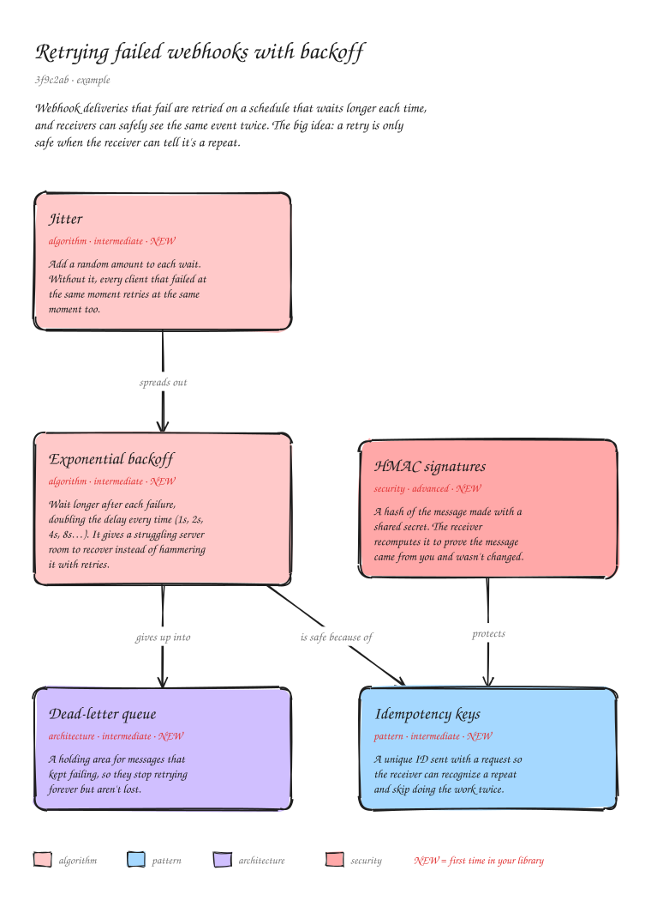

Concepts is an MCP server. After each commit, your agent draws the change as hand-drawn system-design diagrams and marks every concept it relies on (patterns, algorithms, protocols, APIs) right where it lives, with a note for each one.
1Add the MCP to your agent
claude mcp add --scope user concepts -- npx -y concepts-mcp@latestNeeds Node.js 20+ and git. Paste into your terminal.
2Turn it on in a repository
Ask your agent. It asks whether to keep diagrams in the project or in your learning library, then writes the instructions into AGENTS.md.
Set up concept diagrams for this repo.Or run the setup yourself from the repository folder:
npx -y concepts-mcp@latest initFrom then on, the agent diagrams each commit it makes. Commits you make by hand are picked up the next time the agent runs.

.excalidraw file opens in excalidraw.com, Obsidian or VS Code.The MCP reads git and draws the files. The agent you already use picks out the concepts, so there's no extra API key or account.
It tracks which commits have a diagram, so commits made by hand are picked up next time. Lockfiles and generated files stay out, and trivial commits are skipped.
Architecture, sequence, flow, state machine and data-model views, as many as the change needs, with real shapes for databases, queues, people and decisions.
Each concept gets one Markdown note that collects every commit where it showed up. Notes you add yourself are kept.
You choose during setup: in the project (docs/concepts/, so they show up on GitHub) or in your learning library (~/Desktop/ConceptLibrary/<repo>/, or ~/ConceptLibrary/ when there's no Desktop folder), where every project adds to the same library.
ConceptLibrary/
README.md every project
my-app/
README.md every diagram, newest first
commits/2026-11-06-3f9c2ab-retrying-failed-webhooks/
concepts.excalidraw editable diagram
concepts.svg preview
README.md the concepts, explained
notes/exponential-backoff.md one note per concept